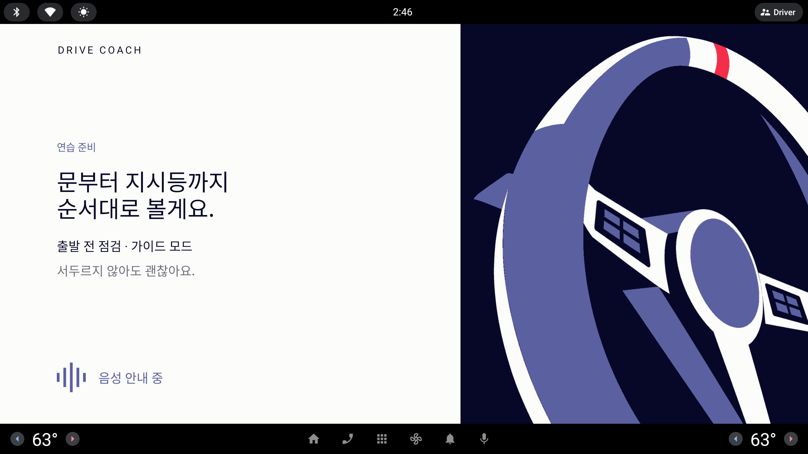

`시작` 을 누르면 지금은 약 2.5 초 동안 핸들 그림 화면이 떴다가 넘어간다. 그 사이 음성은 "출발 전 점검, 가이드 모드. 제가 단계마다 말하고 확인할게요. 오늘은 … 봅니다." 를 아직 읽고 있다. 다섯 안은 "이 화면이 무엇인가(정체성)" 와 "언제 넘어가는가(지속 시간 규칙)" 를 한 쌍으로 바꾼다.
사용자 피드백 (원문, 10/7) — #운전대화면
- 로딩인지 음성 안내 중이라고 나오면서 휙 지나가는데 해당 화면의 정체성 파악이 불분명하고 지속시간이 아쉬워
아래 화면은 모두 실제의 1/3 (853 × 423) — 실제 화면은 약 3배
모든 안의 같은 데이터과제 `점검 › 출발 전 점검 · 가이드 모드`(1번 페이지 표기 시안 중 하나) · 제목 "문부터 지시등까지 / 순서대로 볼게요." · 음성 문장은 지금 그대로. 모드 설명 줄은 홈 이유 줄과 같은 말 "제가 단계마다 말하고 확인할게요."
사진에서 지운 줄사용자 사진(사내 에뮬)에서 과제 줄 아래 흐린 한 줄 "서두르지 않아도 괜찮아요." 가 펜으로 그어져 있다 — 다섯 안 모두 이 줄을 빼고, 필요하면 그 자리를 모드 설명이 쓴다.
지금 규칙(코드)`LessonStateMachine.begin()` → `Briefing` 단계 → `delay(2_500)` 고정 → 첫 회차. 음성 끝과 무관하다. TTS 포트에는 "다 읽었다" 신호가 아직 없다(`speak()` 만 있음) — 음성 길이에 맞추는 안은 이 신호를 새로 만들어야 한다.
빨간 점선 = 지금과 달라지는 요소· 주 알약 = 평면 Signal(10/7 확정) · 보조 = Lavender· 화면 아래 시간 띠 = 지속 시간 규칙(음성 약 6 초 가정)
지금 · 출발 전 점검 (lesson-briefing-checklist.png)

지금의 시간
음성 "출발 전 점검, 가이드 모드. 제가 단계마다 말하고 확인할게요. 오늘은 … 봅니다." (약 6 초)
브리핑 화면 (2.5 초 고정)
이미 점검 화면 — 음성은 아직 브리핑 문장
02.5 초약 6 초
지금
핸들 그림 + "음성 안내 중"
왼쪽 Paper 에 눈썹 `연습 준비` → 제목 두 줄 → 과제 줄 → 흐린 한 줄 → 아래 파형 + "음성 안내 중". 오른쪽 Ink 면에 큰 핸들. 누를 곳이 없다.
문제
정체성 — 파형 + "음성 안내 중" 이 로딩 표시처럼 읽힌다. 핸들 그림은 어떤 과제든 같아 "무엇을 준비하는지" 를 말하지 않는다
지속 시간 — 2.5 초 고정이라 음성이 끝나기 전에 점검 화면으로 넘어간다. 글을 다 읽기도 전에 사라지고, 점검 화면 첫 지시와 브리핑 음성이 겹친다
흐린 줄 — "서두르지 않아도 괜찮아요." 는 사진에서 지우라고 표시됨
A · 준비 카드 — 누를 때까지 머문다
DRIVE COACH
연습 준비
문부터 지시등까지
순서대로 볼게요.
점검 › 출발 전 점검 · 가이드 모드
제가 단계마다 말하고 확인할게요.
음성 안내 중
출발 →
← 과제 다시 고르기
A 의 시간
음성 (약 6 초)
조용히 머묾 — 운전자 차례
`출발` → 점검
0음성 끝누른 순간
A
준비 카드 · `출발 →`
브리핑을 "보고 지나가는 화면" 에서 "출발 직전 마지막으로 확인하고 누르는 화면" 으로 바꾼다. 홈의 `시작` 은 "과제를 고름", 여기의 `출발` 은 "준비됐다" 로 뜻이 갈린다.
장점
지속 시간 문제가 사라진다 — 운전자가 정한다. 음성과 점검 첫 지시가 겹치지 않는다
`← 과제 다시 고르기` 로 잘못 고른 과제를 여기서 되돌릴 수 있다(지금은 점검 화면에 들어간 뒤에야 끝낼 수 있음)
시연 녹화에서 내레이션할 시간을 번다
주의점
누름이 하나 는다 — 홈 `시작` 과 연달아 두 번. 이름을 `출발` 로 달리해 "같은 것을 또 누른다" 느낌을 줄인다
정직성 · 안전 — 정차 화면이므로 터치 타깃 허용. 다만 기다리는 사이 차가 5 km/h 를 넘으면 버튼을 숨기고 바로 다음 단계로(절대 규칙 10)
핸들 그림은 그대로라 "무슨 과제" 정체성은 글이 맡는다
지속 시간 규칙
`출발` 을 누를 때까지 머문다(자동으로 넘어가지 않음)
누르면 남은 음성을 끊고 첫 회차
속도 > 5 km/h 가 되면 누르지 않아도 넘어간다
구현상태기계: `delay` 대신 `proceed()` 진입점 + 속도 감시(Claude) · 화면: 알약·링크 두 개(Codex) · 작음
B · 음성 자막 + 진행 막대 — 다 읽을 때까지
DRIVE COACH
연습 준비
문부터 지시등까지
순서대로 볼게요.
점검 › 출발 전 점검 · 가이드 모드
출발 전 점검, 가이드 모드.
제가 단계마다 말하고 확인할게요.
오늘은 문부터 지시등까지 봅니다.
음성 안내 중건너뛰기 ›
B 의 시간
음성 (약 6 초) — 막대가 문장 길이만큼 찬다
1 초
점검
0음성 끝+1 초
B
자막 + 진행 막대
"음성 안내 중" 을 실제로 읽고 있는 문장(마침표마다 한 줄, 지금 문장만 진하게)으로 바꾸고, 아래 가는 막대로 "얼마나 남았는지" 를 보여 준다. 음성이 끝나야 넘어간다.
장점
"로딩" 이 아니라 "코치가 지금 이걸 말하는 중" 으로 읽힌다 — 화면과 귀가 같은 내용
음성과 점검 첫 지시가 겹치지 않는다. 누를 것 없이 흐른다(주행 화면 규칙에도 가장 안전)
주의점
구현 — TTS 포트에 "다 읽었음" 신호가 없다. Android `UtteranceProgressListener` 연결 + Fake TTS 는 글자 수로 길이 추정이 필요하다. 사내 TTS 엔진이 콜백을 안 주면 막대가 멈춘다 → 최대 시간 상한 필수
막대는 숫자 없이 길이만 — 문장 규칙 위반 아님
정체성은 여전히 핸들 그림(과제와 무관)
지속 시간 규칙
음성이 끝난 뒤 1 초에 넘어간다
최소 3 초 · 최대 12 초(콜백이 안 오면 상한에서 넘어감)
`건너뛰기` 는 정차 중에만 보인다
구현TTS 포트 `speaking` 흐름 신설 + 상태기계가 그걸 기다림(Claude) · 자막·막대(Codex) · 중간
C · 오늘 볼 것 미리보기 — 점검 화면으로 그대로 이어진다
DRIVE COACH
오늘 볼 것
도어안전벨트기어브레이크 / 시동좌 지시등우 지시등비상등
연습 준비
점검 › 출발 전 점검 · 가이드 모드
문부터 지시등까지
순서대로 볼게요.
제가 단계마다 말하고 확인할게요.
음성 안내 중
바로 시작 →
C 의 시간
음성 — 항목을 말할 때마다 왼쪽 줄이 하나씩 켜진다
전부 켜짐
점검
0약 4.5 초6 초
C
오늘 볼 것 미리보기
좌우를 점검 화면과 같게(왼쪽 Ink 목록 · 오른쪽 Paper) 뒤집는다. 왼쪽에 오늘 볼 항목 이름만 하나씩 켜지고, 넘어가면 같은 목록에 상태가 붙으며 점검 화면이 된다 — 브리핑 = "목차".
장점
정체성이 가장 분명하다 — "오늘 할 일 목록을 먼저 본다". 다음 화면과 같은 자리라 화면 전환이 끊기지 않는다
주차 과제는 "핸들 방향 · 기어 전환 · 뒤 거리" 세 줄로 같은 틀에 들어간다
주의점
핸들 그림이 사라진다(그림 대신 목록이 Ink 면을 채움). 기하학 포스터 느낌은 조금 약해진다
평가 모드에서 목록을 미리 보여 주면 "외워서 하는" 효과 — 평가는 이름 대신 빈 칸만 켜는 변형이 필요(4번 페이지와 같이 정한다)
음성과 줄 켜짐을 맞추려면 문장 길이 추정이 필요 — 일정 간격(0.6 초)으로 켜면 충분
지속 시간 규칙
고정 6 초(지금 2.5 초 → 6 초, 음성 길이 어림)
`바로 시작` 으로 앞당김 가능(정차 중)
항목은 0.6 초 간격으로 켜짐 — 음성 콜백 불필요
구현`Briefing` 에 항목 목록 필드 추가 + 6 초(Claude) · 브리핑 화면 좌우 반전·목록(Codex) · 중간
D · 브리핑 없애기 — 홈에서 바로 점검, 머리띠만 잠깐
DRIVE COACH
도어열림
안전벨트—
기어—
브레이크 / 시동—
좌 지시등—
우 지시등—
비상등—
연습 준비 · 점검 › 출발 전 점검 · 가이드 모드
문부터 지시등까지
순서대로 볼게요.
코치 1/7
운전석 문을
닫아 주세요.
다 됐어요 →
D 의 시간
브리핑 음성 · 머리띠 펼침 · 지시문 흐림
접힘
첫 지시 "운전석 문을 닫아 주세요."
0 (홈에서 바로)음성 끝
D
브리핑 없애기
브리핑 화면을 따로 두지 않고 `시작` 에서 곧장 점검 화면으로 간다. 브리핑 문장은 오른쪽 위 Periwinkle 머리띠로 잠깐 펼쳐졌다가, 음성이 끝나면 한 줄(과제 표기)로 접힌다.
장점
"휙 지나가는 화면" 자체가 없어진다. 화면 수가 하나 줄어 흐름이 짧다
브리핑을 들으면서 이미 첫 항목(도어)을 볼 수 있다
주의점
정체성 — 사용자가 원한 것은 "이 화면이 무엇인지 분명히" 인데, 이 안은 화면을 없애서 답한다. 시연 영상에서 "준비 → 연습" 의 숨 고르기가 사라진다
음성 순서 — 브리핑 문장이 끝나기 전에 첫 지시를 읽으면 겹친다. 첫 지시를 브리핑 뒤에 줄 세워야 한다(TTS 큐 순서)